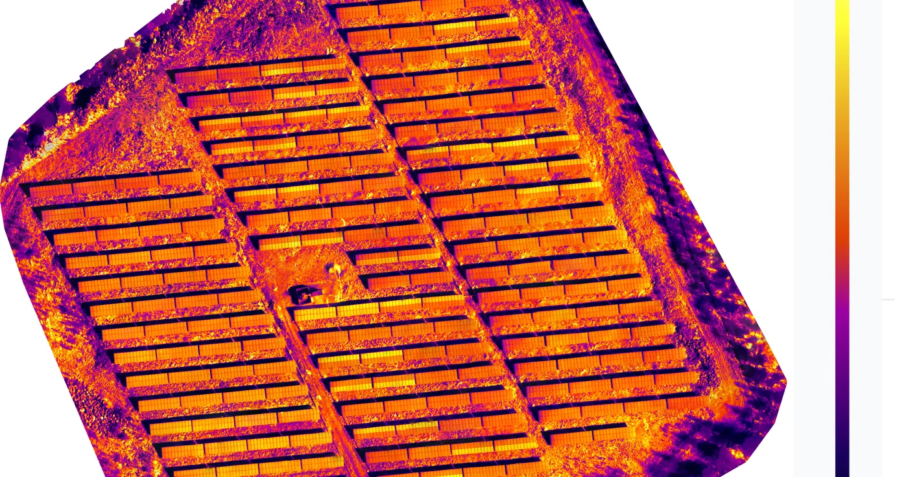

Lämpökuvaus
Lämpökuvaus kaukolämpöverkossa – vuotojen paikannus dronella
Epävarmuus kaukolämpöverkossa maksaa nopeasti. Lämpökuvaus muuttaa epäilyn selkeäksi tilannekuvaksi, jota kunnossapito, tilaaja ja urakoitsija voivat käyttää päätöksenteon tukena.

15+ vuotta
dronekuvausta
5+ vuotta
lämpökuvausta
Selkeä raportti
havaintojen paikannus
Miksi lämpökuvaus kannattaa kaukolämpöverkossa?
- Kustannusohjaus – kaivutyöt voidaan kohdistaa järkevämmin
- Käyttövarmuus – poikkeamat voidaan havaita ennen kuin tilanne laajenee
- Dokumentointi – lämpö- ja peruskuvat tukevat raportointia
- Ennakoivuus – sama kohde voidaan kuvata myöhemmin vertailua varten
Drone-lämpökuvaus tuo kokonaiskuvan nopeasti
Dronella toteutettu lämpökuvaus soveltuu erityisesti tilanteisiin, joissa alue on laaja tai kulku on hankalaa. Kun peruskuva ja lämpökuva tuotetaan rinnakkain, poikkeama on helpompi yhdistää todelliseen sijaintiin.
Vuotoepäily muuttuu rajatuksi jatkotoimeksi
- Epäily rajataan – määritetään tarkasteltava alue
- Aineisto kuvataan – peruskuva ja lämpökuva rinnakkain
- Jatkotoimi kohdistuu – raportti auttaa kohdentamaan tarkemmat tutkimukset
Palvelu sopii erityisesti energiayhtiöille, kunnossapidolle ja infrakohteiden vastuuhenkilöille, kun tavoitteena on rajata lämpöpoikkeama ja vähentää turhaa kaivamista.
Pyydä maksuton tarjous
Kerro kohteestasi – saat kiinteähintaisen tarjouksen 24 tunnissa, ilman sitoumusta.
Pyydä tarjous →✓ Luotettava Kumppani · Tilaajavastuu